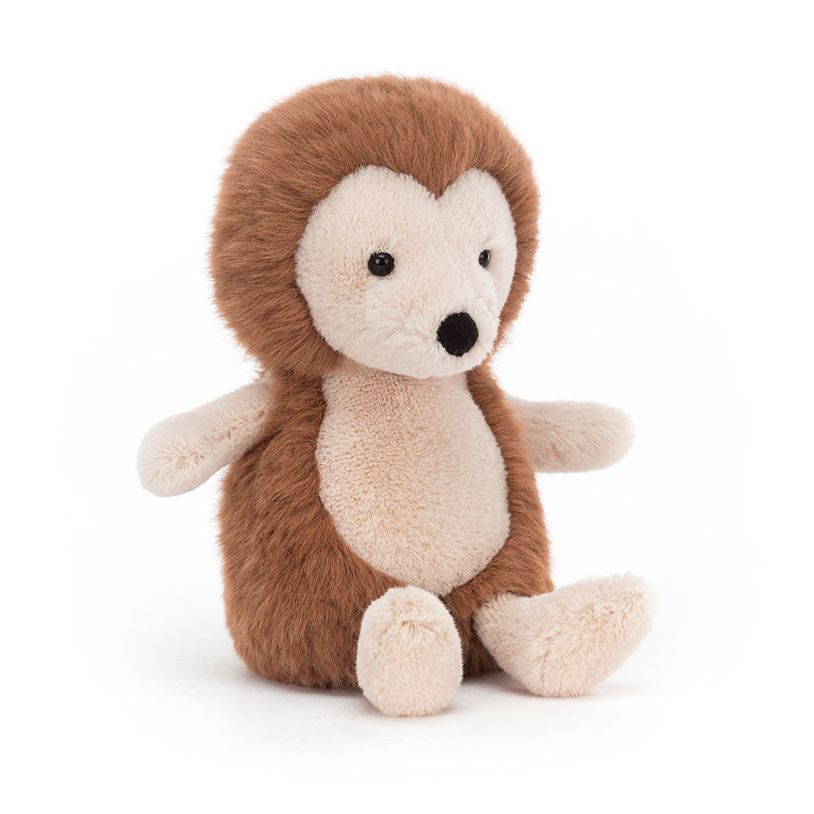
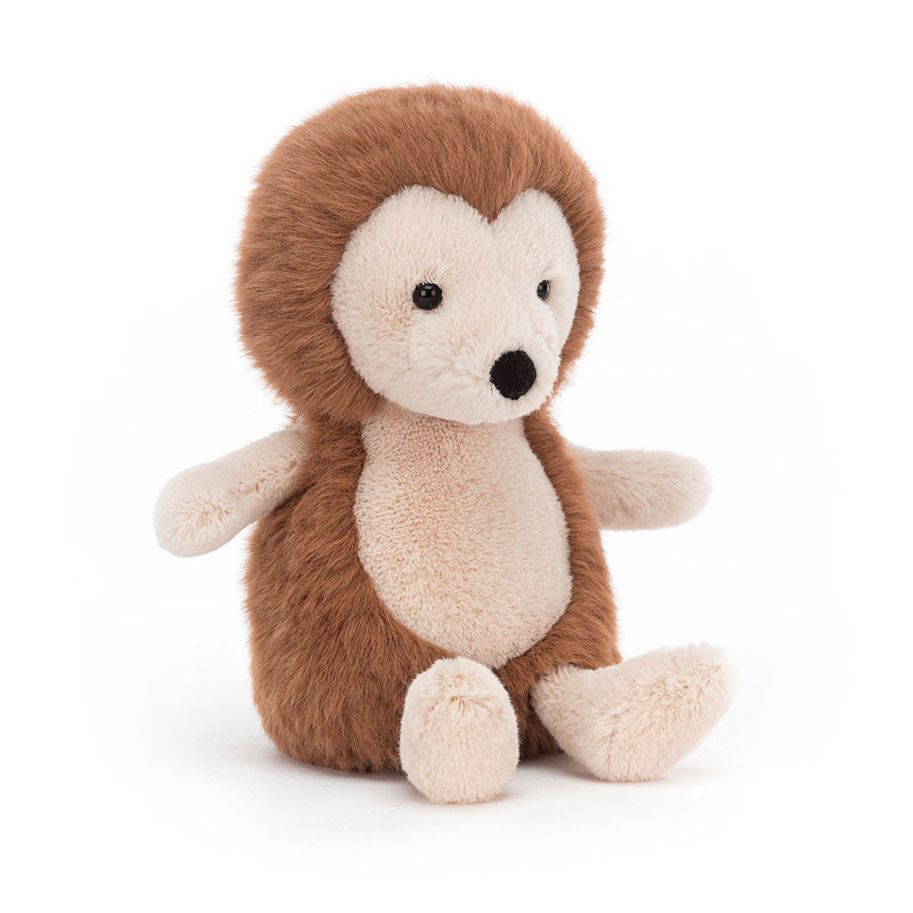

aries, typically born between march 21 and april 19, is known for their bold, energetic nature and unyielding determination, just like bartholomew! as a fearless and spirited companion, bartholomew charges through life with confidence and a lively heart, mirroring aries' adventurous and dynamic energy. whether leading the way on a new adventure or bouncing through a playful moment, bartholomew embodies aries' bold enthusiasm and boundless courage.
you're cylde capybara!
taurus, typically born between april 20 and may 20, is known for their calm nature, love for comfort, and steady presence, just like clyde. ever grounded and easygoing, clyde moves through life with a serene charm, mirroring taurus’ patient and reliable spirit. whether lounging by the water or enjoying the simple pleasure of the day, clyde is a true reflection of taurus’ tranquil and steadfast heart.
you're brooke otter!
gemini, typically born between may 21 and june 21, is known for their curiosity, lively energy, and adaptability, just like brooke! quick-witted and full of charm, brooke has a way of making every encounter feel engaging and fun. whether sparkling conversations, discovering new places, or keeping spritis high, brooke perfectly relfects gemini’s playful and ever-curious nature.
you're delia duck!
cancer, typically born between june 22 and july 22, is known for sensitivity, love of comfort, and a sometimes moody demeanor, just like delia! with an adorably “sad” beak that adds to an undeniable charm, delia reflects cancer’s nurturing and endearing nature. Whether curled up in a cozy spot or offering quiet companionship, deliaperfectly captures cancer’s sentimental and loving spirit.
you're peanut penguin!
leo, typically born between july 23 and august 22, is known for their warm-heartedness, playful energy, and natural charisma, just like peanut, whose icebergs of charm and fuzzy flippers makea star in any snow-filled scene. a friendly face and love for sliding and shaking a tail feather reflect leo’s zest for life and their knack for being the center of attention.
you're archie dinosaur!
virgo, typically born between august 23 and september 22, is known for reliability, attention to detail, and a grounded nature, just like archie! with a timeless presence and carefully crafted features, archie embodies virgo’s appreciation for structure and perfection. whether bringing joy through a reassuring presence or standing tall with quiet confidence, archie perfectly represents Virgo’s thoughtful, kind, and unwavering personality.
you're iris siamese cat!
libra, typically born between september 23 to october 23, is known for their elegance, charm, and love for balance, just like iris! ever the social butterfly, iris thrives in companionship, mirroring libra’s deep desire for harmony and connection. whether lounging in a sunbeam or captivating everyone with a poised demeanor, iris embodied libra’s natural allure and effortless grace.
you're odyssey octopus!
scorpio, typically born between october 24 and november 21, is known for their intensity, passion, and intriguing mystery, just like odyssey! As a fearless and bold explorer, odyssey thrives in the unknown, mirroring scorpio’s adventurous spirit and unrelenting drive to discover what lies beyond the horizon. whether navigating the wilderness of uncharted territories or curling up for cozy cordy cuddles, odyssey exudes scorpio’s magnetic charm, powerful presence, and determination to embrace life's challenges head-on.
you're munro scottie dog!
sagittarius, typically born between november 22 and december 21, is known for being curious, adventurous, and always ready for the next big journey, just like munro! with a warm and friendly personality, munro embodies sagittarius’ love for exploration and boundless enthusiasm for new experiences. whether seeking out new adventure, embracing spontaneous opportunities, or bringing energy to any environment, munro perfectly captures sagitarrius’ adventurer spirit and open-hearted charm.
you're myrtle hippopotamus!
capricorn, typically born between december 22 and january 19, is known for their determination, discipline, and grounded nature, just like myrtle! as a reliable and steady presence, myrtlenavigates life with patience and a no-nonsense attitude, mirroring capricorn’s hardworking and ambitious spirit. whether standing proudly in the herd or quietly observing, myrtleembodies capricorn’s quiet strength and steady resolve.
you're willow hedgehog!
aquarius, typically born between january 20 and february 18, is known for their uniqueness, creativity, and love of standing out from the crowd, just like willow! With a snuffly truffle nature and velvety spines, willow embraces individuality with a heart-shaped face and sweet snub nose, mirroring aquarius’ inventive and free-spirited energy. whether wandering at twilight or seeking interesting bugs, willow embodies aquarius’ curious spirit and a knack for discovering new things, always following a unique path with joy and enthusiasm.
you're tully turtle!
pisces, typically born between february 19 to march 20, is known for their dreamy nature, gentle spirit, and deep connection to water, just like tully! as a free spirit, tully flows through life with curiousity and wonder, mirroing pisces’ imaginative and go-with-the-flow attitude. whether lolloping down the beach or bobbing in the waves, tully embodies pisces’ whimsical charm and boundless sense of adventure.


 
